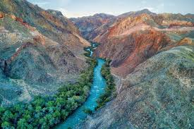
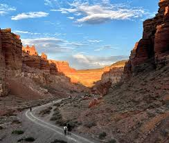
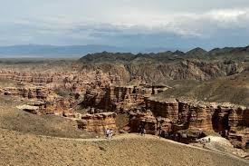
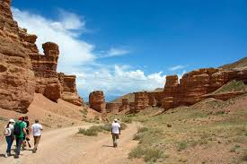
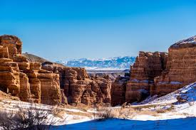
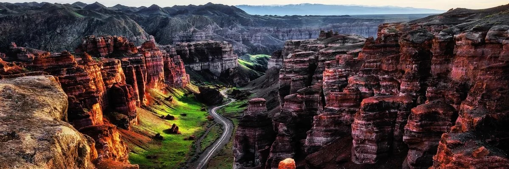
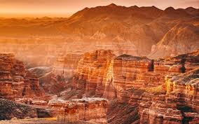
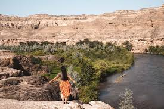
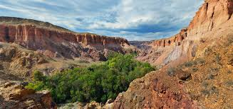

Charyn Canyon
Charyn Canyon, often called the "Grand Canyon of Central Asia", is located about 200 km east of Almaty. It stretches for over 150 km and offers breathtaking views of red sandstone cliffs shaped by wind, water, and time.
The most famous part of the canyon is the Valley of Castles, where rock formations resemble ancient fortresses. Visitors can hike, take guided tours, or simply enjoy the spectacular natural scenery.

Gallery

Canyon view 1

Canyon view 2

Canyon view 3

Canyon view 4

Canyon view 5

Canyon view 6

Canyon view 7

Canyon view 8

Canyon view 9